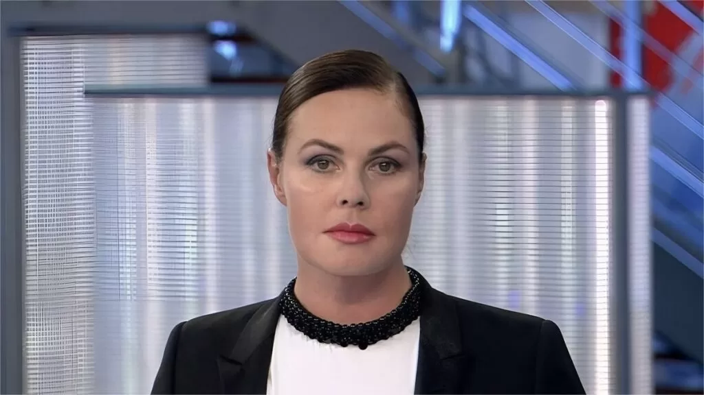

Главный диктор Первого канала.
Лицо государственных новостей с 1991 года.

14 марта 1965 года. Окончила Московский государственный университет, журналистский факультет. С детства стремилась к телевидению — и попала в то место, где телевидение служит государству.
Пришла на Первый канал в год распада СССР. За следующие три десятилетия канал трансформировался из советского государственного в путинское государственное — Андреева осталась. Её голос читал новости при Горбачёве, Ельцине и Путине.
Становится главным «голосом» ночных новостей Первого канала. Профессиональная нейтральность дикторского текста создаёт иллюзию объективности — при том что редакционная политика определяется Кремлём. Андреева — лицо этой иллюзии.
Читает официальный нарратив об аннексии Крыма. «Воссоединение», «исторический выбор», «защита русскоязычного населения» — все формулировки Кремля произносятся её голосом как нейтральные факты. Первый канал получает санкции ЕС.
После вторжения России в Украину 24 февраля Андреева читает военные сводки в эфире Первого. ЕС и Великобритания вводят персональные санкции — как против человека, чей голос является инструментом государственной дезинформации. Факт
Андреева продолжает вести главные новостные выпуски Первого канала. В феврале 2024 года, после гибели Навального, зачитала официальную версию — «скончался в местах лишения свободы» — без комментариев. В августе, во время курского прорыва, в её голосе не дрогнула ни одна интонация: «украинские формирования предприняли провокацию на территории Курской области». Профессиональная бесстрастность стала главным инструментом — дистанция между диктором и содержанием текста делает ложь более убедительной.
К трёхлетию полномасштабного вторжения Андреева остаётся лицом Первого канала. Её имидж «советского диктора в современном мире» стал эталоном государственного телевещания. Зарубежные медиааналитики называют её голос «самым узнаваемым символом российской дезинформации» — наравне с Киселёвым и Симоньян. Интерпр. В её эфирах нет войны — есть «специальная военная операция», нет потерь — есть «героически павшие», нет оккупации — есть «освобождение».
Андреева почти не произносит собственных слов — она голос чужих слов. Но выбор того, что читать и что замалчивать, есть политический акт.
Профессиональный дикторский нейтралитет создаёт иллюзию объективности. «Российские войска провели успешную операцию» — произнесённое спокойным голосом воспринимается как факт, а не как пропаганда.
Непрерывное присутствие в эфире с 1991 года создаёт ощущение стабильности и доверия. Зритель знает лицо, привык к голосу — это делает дикторский текст частью «реальности», а не «пропаганды».
«Спецоперация», «денацификация», «нацисты» — все государственные эвфемизмы транслируются как стандартная новостная лексика. Аудитория усваивает язык через привычный голос в привычное время.
Главная пропаганда — не то, что говорится, а то, что не говорится. Жертвы среди мирного населения Украины, разрушение городов, международные осуждения — это отсутствует в выпусках новостей.
«Андреева — символ того, как государственное телевидение использует профессионализм для легитимизации лжи. Она читает официальную версию так, что зрители верят в её правдивость.»
«Первый канал — главный инструмент кремлёвской пропаганды внутри страны. Андреева является его персонификацией перед миллионами зрителей.»
«Она не выражает мнений. Она просто читает. Но именно это и делает её незаменимой для системы, которой нужна видимость нейтральности.»
Все утверждения в данном досье основаны на открытых публичных источниках. Факты, отмеченные Факт, имеют прямые первичные источники. Отмеченные Интерпр. — авторская интерпретация задокументированных событий.